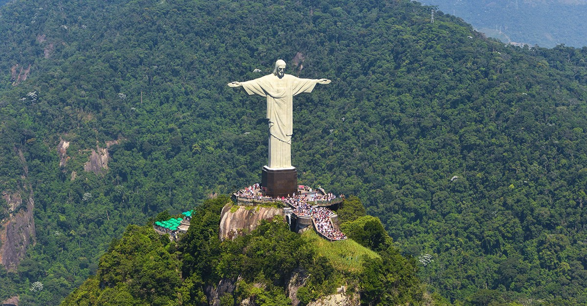

|  |
El Cristo Redentor es una obra cuya significación se relaciona con el imaginario religioso de Brasil. Para este país, fuertemente influenciado por el catolicismo, Cristo se representa como símbolo de redención, símbolo de perdón y símbolo de protección. |
El proyecto fue una obra del diseñador Heitor da Silva Costa, del pintor Carlos Oswald y del escultor Maximilian Paul Landowski. El Cristo Redentor es una escultura de estilo Art Déco, con los brazos abiertos en forma de una cruz, de 38 metros de altura, el equivalente a un edificio de 13 pisos. De ese total, 30 metros son equivalentes al monumento y los otros ocho metros equivalen al pedestal. Cada brazo ocupa un área de 88 metros cuadrados y el pie mide 1,35 metros. El peso total de la estatua es de aproximadamente 1145 toneladas, de las cuales 30 toneladas corresponden sólo a la cabeza |
|